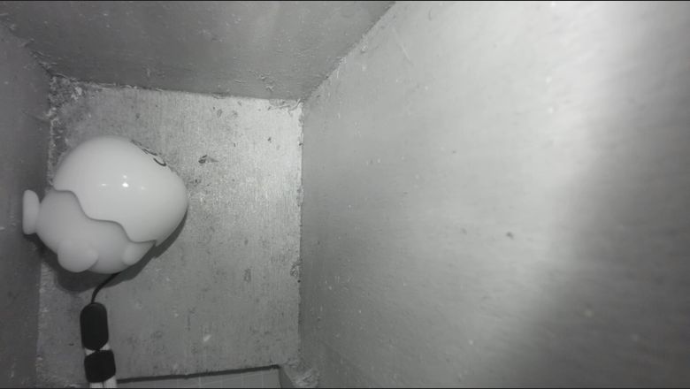

Live stream
MediaMTX is a small, single-file media server. It takes the camera picture and offers it as RTSP (for programs) and WebRTC (for a browser).
What you get
- RTSP inside the Pi:
rtsp://127.0.0.1:8554/nestbox(used by the detection script) - RTSP in the home network:
rtsp://<pi-address>:8554/nestbox(used by Home Assistant) - Browser view:
http://<pi-address>:8889/nestbox/
Install
Download the linux_arm64 release from the MediaMTX releases page on GitHub and unpack it to /opt/mediamtx. The Raspberry Pi camera support is built in, so nothing else is needed. The unpacked folder contains the program and a long mediamtx.yml with all settings and their defaults.
Configuration
I left the file as shipped and changed only the paths section at the very bottom. The path name is the last part of the stream address. The camera runs at 1280x720 and 15 frames per second, which is plenty for a nest box and keeps the Pi cool.
paths:
nestbox:
source: rpiCamera
rpiCameraWidth: 1280
rpiCameraHeight: 720
rpiCameraFPS: 15
rpiCameraBitrate: 2000000
all_others:Two defaults worth knowing: autofocus is on (rpiCameraAfMode: continuous) and the camera is not flipped. If your picture is upside down, set rpiCameraHFlip: true and rpiCameraVFlip: true in the same path section.
Start it at boot
Save as /etc/systemd/system/mediamtx.service, with your own user name:
[Unit]
Description=MediaMTX
After=network-online.target
Wants=network-online.target
[Service]
User=<your-user>
ExecStart=/opt/mediamtx/mediamtx /opt/mediamtx/mediamtx.yml
Restart=always
[Install]
WantedBy=multi-user.targetsudo systemctl daemon-reload
sudo systemctl enable --now mediamtxCheck that it is running
systemctl is-active mediamtx
sudo systemctl restart mediamtx
Keep it in the home network
The stream has no password in this setup, so it must never be reachable from the internet. Do not forward any ports on the router. To look from outside the house, use a VPN into your own network. Note that over a router VPN, .local names often do not resolve; use the Pi's IP address instead.